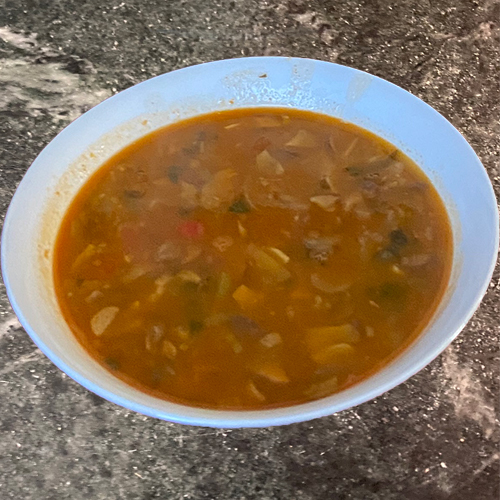

Back to Previous Page
Albanian White Bean Soup

Description
If this isn't one of the most quintessential Albanian dishes, than you haven't fully experienced Albanian food! This soup is typically made all season
long, but naturally, it is mostly enjoy during the colder seasons. Also know as grosh or fasul, this dish is very common in Albania across all
regions. Growing up, this soup was made in my home quit often. Fun fact, it's actually my dad's favorite dish and we would make it almost every
Friday. I have made this soup with all different type of beans, but nothing compares to these small white beans. Although simple in terms of
ingredients, this soup is comforting, hearty and VERY FILLING! Simmered low and slow, this soup has a perfectly thickened broth with no shortage
of flavor.
Best served with a hearty bread from you local bakery.
Serves 4-6 people
Ingredients
- 1lb (454g) dried white kidney beans
- 10 cups of water (x2)
- 1 white onion (medium size)
- 3-4 garlic cloves
- 1 tablespoon vegetable oil
- 1 tablespoon all purpose white flour
- 1/2 tablespoon red pepper/paprika
- 1/4 teaspoon cayenne pepper (optional, to taste)
- 1/2 teaspoon salt
- 1/4 teaspoon black pepper (or more - to taste
- Optionally add 1/4 hot red pepper
Directions
- Soak the beans:
Rinse the dry beans in cold water, then cover with water in a stockpot and soak them overnight.
The next day, drain the soaking water and cook with a fresh batch of water.
- Boil the beans:
Rinse the soaked beans again and put in a pot with water to be boiled.
Bring to a boil in high heat. Lower the temperature to low and let simmer for about 30-40 minutes
or until tender (not too soft, the beans should keep the shape.)
- Sauté the onion, garlic and peppers
While the beans are simmering, finely chop the onion, garlic and peppers. Sauté all in moderately high heat with vegetable oil:
start with the onion and garlic, stirring periodically; after the onion starts to soften (about 5-7 minutes) add the peppers, the salt
and the black pepper. After the vegetables have softened (about 15-20 minutes), turn the heat to low and add the tablespoon of flour.
Stir continuously for about a minute until the flour starts to turn light brown. Add the red pepper powder and stir for another minute.
Add a few ladle scoops of the boiling bean water to the sautéing vegetables. Mix and stir for another 1-2 minutes to let the flour cook and
prevent from sticking.
- Add the sautéd mix to the beans
Transfer the sautéed mix to the stockpot with the simmering beans. This will cause the bean soup to thicken slightly. It also gives the
taste of the sautėd vegetables and the reddish color from the red pepper. Stir and let simmer for another 10 minutes. Serve hot in a soup dish.
Complement with pickled vegetables ("turshi").
Back to Top